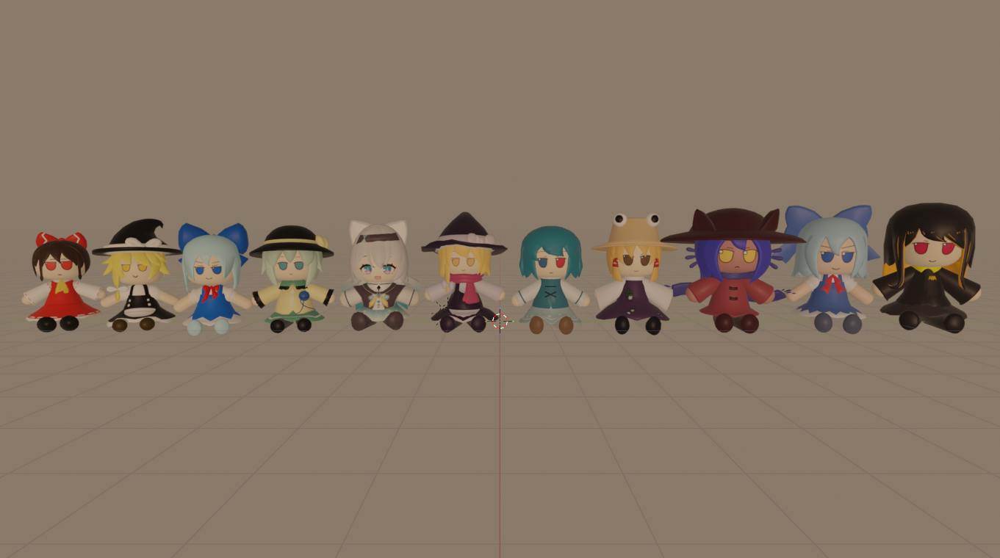

Modeling stuff
I've done a bit of 3D modeling over the past ~2 years and I've barely improved. I use Blender for the modeling process and Photopea for the texturing process. If you're interested, heres some of the stuff I've made:



If you want to commission me, I uhh wouldn't recomend it. I don't really take my modeling seriously and doze off 80% of the time. Finding another person is probably best lol
Why I even set myself up for this?
I started modeling around December 2023, it was only supposed to be a one-time fun thing I did until one of my fan-creations for someone got noticed and wanted to commission me for my horrible model.
After making a few models for them, people started to discover me more frequently somehow, even though I had no other means of contact other than Discord.
This was during a time where in the platform Roblox, making/uploading stuff and giving them out for free or for profit was a popular decision, so modelers were in a sorta highish demand. Throughout 2023 until the first half of 2024, I was getting handfuls of model requests even though I knew that my modeling skill were still kinda at a beginner level.
"OGHHHGHHHHHHHHH" - 2024 me
Although now, I barely get any model requests now, which I'm fine with. I'm still not fully advanced into Blender yet though lol.